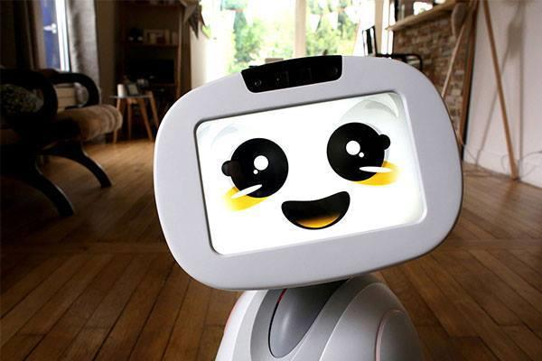

Blue Frog Robotics est une start-up qui développe BUDDY, Le Robot Émotionnel,
fondée par Rodolphe HASSELVANDER
(ex-directeur du Centre de Robotique Intégrée d’Île-de-France (CRIIF)).
Blue Frog Robotics est né de la nécessité de valoriser des années de R&D
réalisées au CRIIF dans la robotique industrielle et de service.
Basé sur le principe de l’Open Model, nous ouvrons BUDDY au monde des développeurs,
des universités et des laboratoires de recherche. BUDDY grandira grâce à vos applications
et interagira avec vous bien plus que vous ne pouvez l’imaginer.
Notre objectif est de concevoir et développer des robots accessibles pour tous qui rendent
la vie plus facile, plus sûre et avec une touche de plaisir.